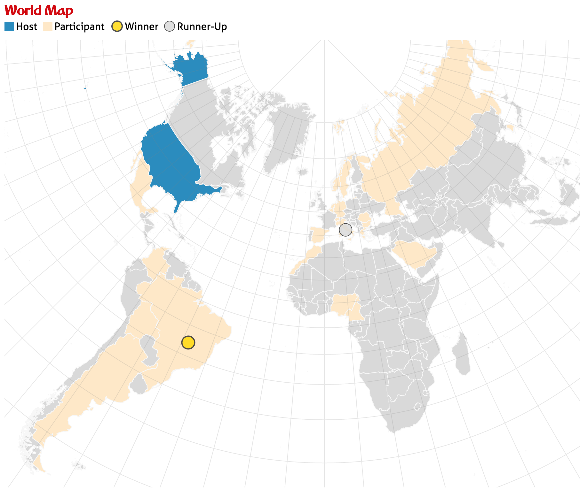

Due: Monday, December 23, 2020, 11:59 pm.
In this assignment you will create a bar chart, a map, and an info panel that are linked to each other and display statistics from Fifa World Cup Games dating back to 1930. The data comes from FIFA’s website (data are no longer publicly available, 2018 edition is missing in the provided data).
We are going to compare several attributes (such as attendance, number of teams, number of goals) of every World Cup since 1930. We are also going to visualize all the information for specific years using the map and info panel.
The bar chart will allow us to see the evolution of attendance, total number of goals, the number of games, and the number of participating countries over the years.
The world map will highlight the host country, all participating countries, as well as the gold and silver medal winners.
The info panel will display host, winner and runner-up, and show a list of all participants.
The bar chart will act as our way to select a particular world cup: by clicking the bar associated with the year, the map and the info box will display the data associated with that world cup.
The final visualization should look roughly like that:
There is some boilerplate code that you can use to develop your solution.
Check that it your solution is valid by uploading it to the W3C HTML Validator.
Add your name and your email address at the top of the html page.
The project structure looks like this:
hw3/
index.html
script.js # you'll be doing most of your work here
styles.css
data/
fifa-world-cup.csv
world.json
assets/
# various assets and images
figs/
# figures used in this description
# irrelevant for the project
d3/
# local d3 libraries
The boilerplate code ships with D3 V4. If you want to use a more recent version (latest is D3 V6.2), please change the script references inside index.html and modify the syntax of possible D3 commands that have changed in the new version. Please refer to D3 documentation page for release notes.
Remember, to be able to access the data files with javascript, you will need to be serving the hw3 directory, not just opening the HTML file in a browser. If your development environment doesn’t already launch a server for you, you can start one with:
cd path/to/hw3
# python 2
python -m SimpleHTTPServer
# python 3
python -m http.serverAnd you can view the page at http://localhost:8080
Data loading is already implemented. We’re reading in the data from the fifa-world-cup.csv file and the map from the world.json TopoJSON file.
The data (the global allWorldCupData variable) contains all the attributes you will need. To better understand the structure of the data it’s a good idea to look at the files and log the data objects to the console. Also take a closer look at the call to d3.csv() in the provided script.js file.
First task: fill in the updateBarChart(selectedDimension) function. Create a bar chart that displays one of the numerical dimensions associated with each World Cup:
Implement your bar chart such that it displays the dimension specified in the selectedDimension parameter.
Make sure to include x and y axes, with tick labels and use the proper d3 scales and axis.
Next, color each bar based on the selected data attribute (both height and color should encode the selected attribute); define and use a variable for color scaling (d3.scale*)
Make the bar-chart update the data it shows depending on the selection of the drop-down box, which calls updateBarChart() with the new selectedDimension. When this part is done, the bar chart should behave like this:
In the updateBarChart() function, there is one location flagged with
// ******* TODO: PART II*******Here, you should make your bars respond to click events. This involves highlighting the selected bar with a different color, and calling the map update and info panel update functions while passing the selected world cup event to them.
Now that these updates are triggered, your next task is to update the text fields in the info panel on the left using the selected world cup. Show the following attributes of the selected year: World Cup Title (‘EDITION’ attribute of the data object), host, winner, runner_up, and a list of the participating teams.
On to the map. Start by filling in drawMap() to draw the background. The projection, including the scaling and translation necessary to center it in the designated map area are all already provided.
Because we will be handling different countries independently, it is important how we create and keep track of each path element!
Note that in the .css styles provided in styles.css there are the following classes:
.countries {
stroke: #f7f7f7;
fill: #d9d9d9;
}
.team {
fill: #fee8c8;
}
.host {
fill: #2b8cbe;
}These classes are meant to facilitate the task of styling each country path element according to its role. As you may have guessed, all the country path elements should be assigned the countries class. We will use the other two classes when updating the map.
Another important task is going to be styling specific countries (such as the host country) when updating the map for a selected year. Since there is only one of each country, we can use ids to tag them. The id field provided in the .json data might come in handy here!
Update the map for a selected world cup, as triggered from the bar chart.
Recall that the aspects we want to highlight are:
We want to use color to encode the participating and host country, and a marker to mark the winning team and runner up. This avoids the tricky situation of having to color a country in two colors, which would happen if the host wins, which happened a few times in history.
As mentioned in the createMap() stage, we have created classes to style the hosting country (.host) and the participating countries (.team). Make sure and take advantage of those to style the appropriate path elements.
Here is the map as it should look like for the 1994 World Cup in the US:

Selections must be cleared before updating to another world cup. Do this in the clearMap() function. This should remove highlights from countries and the markers representing winning teams.
Display latitude and longitude grids on the map.
Make all the countries respond to a click event by displaying a list of World Cups they participated in. Also display if they were ever winners or runner ups. Add this information to a new, separate panel.
A good assignment will properly implement the following parts.